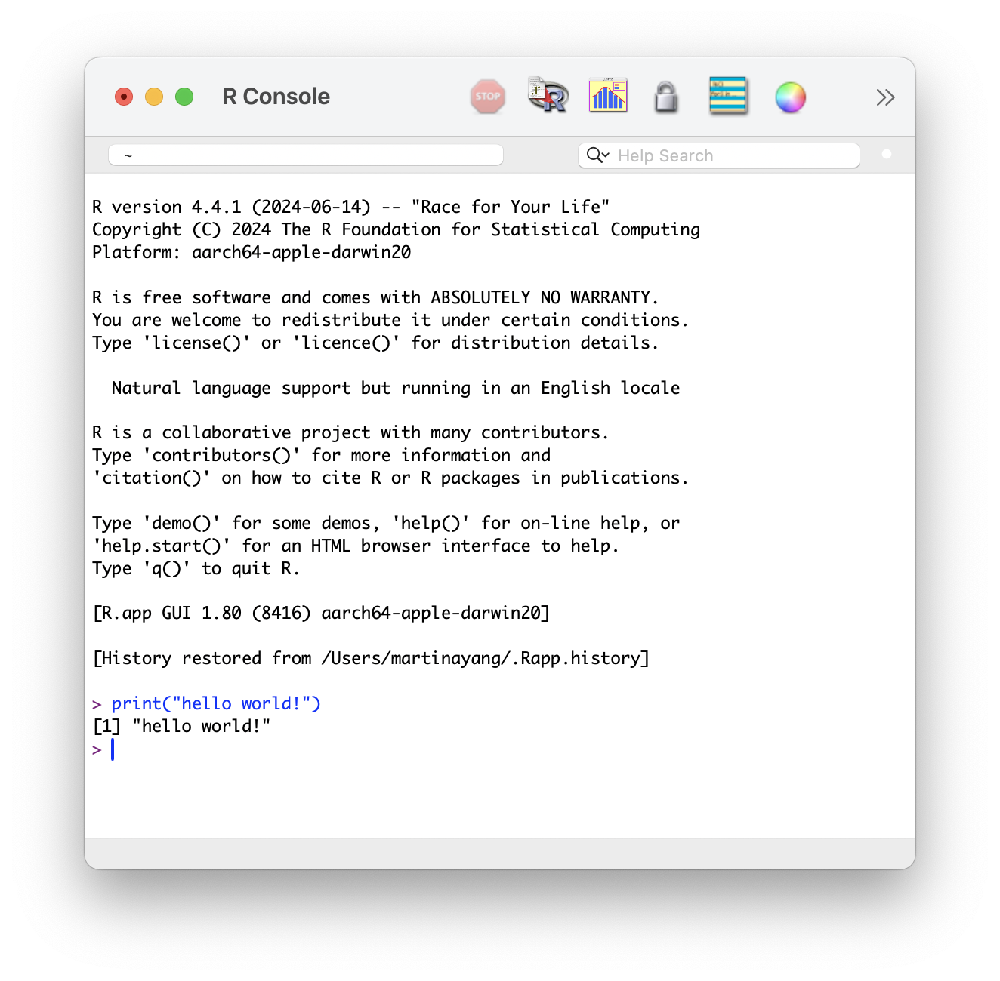
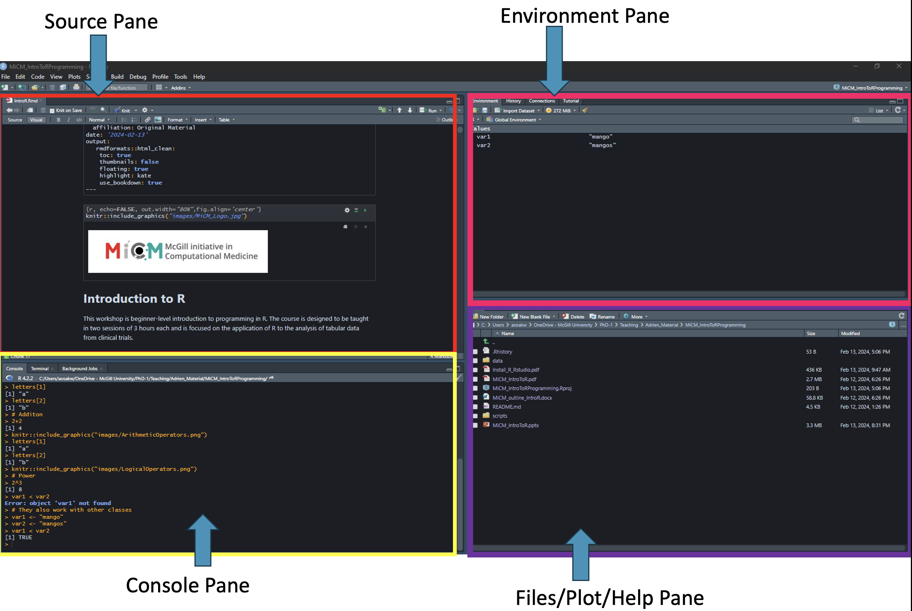
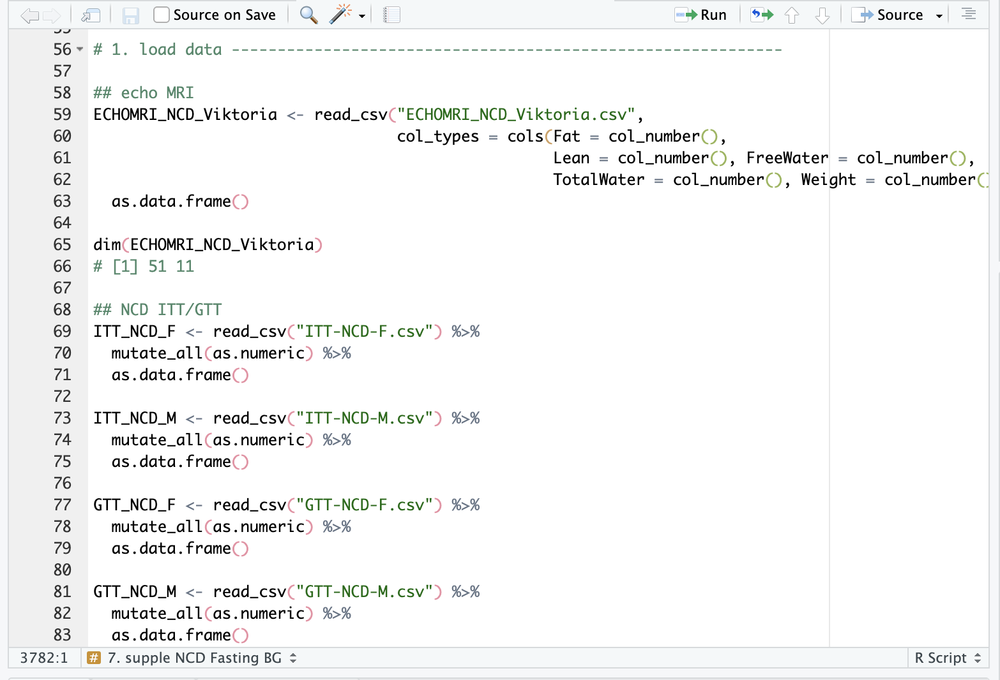
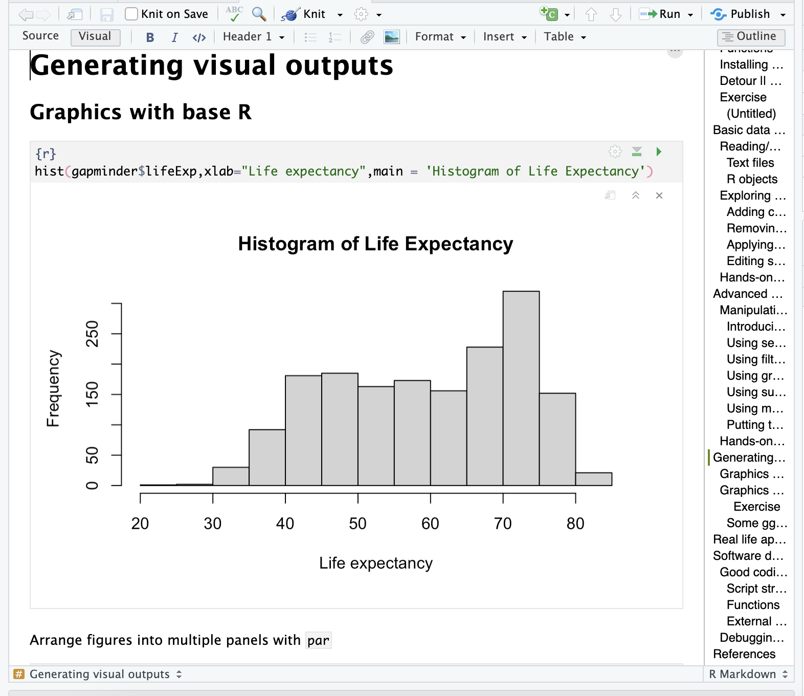
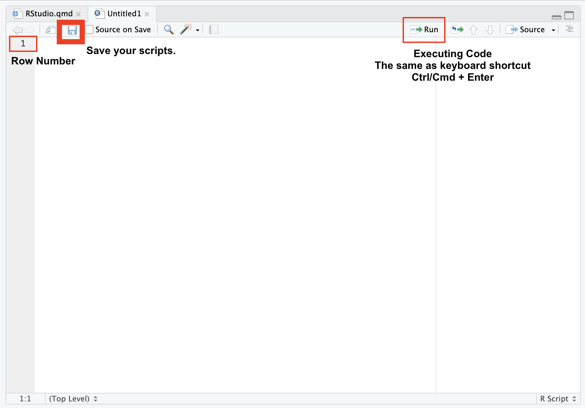
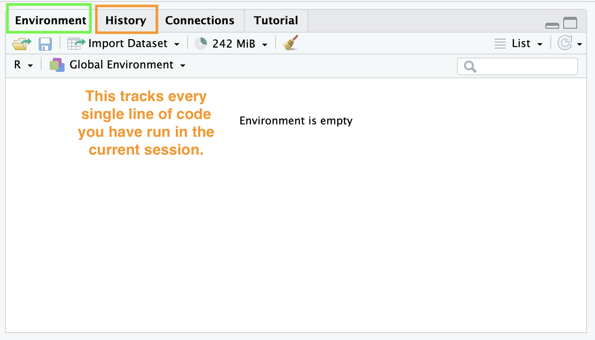
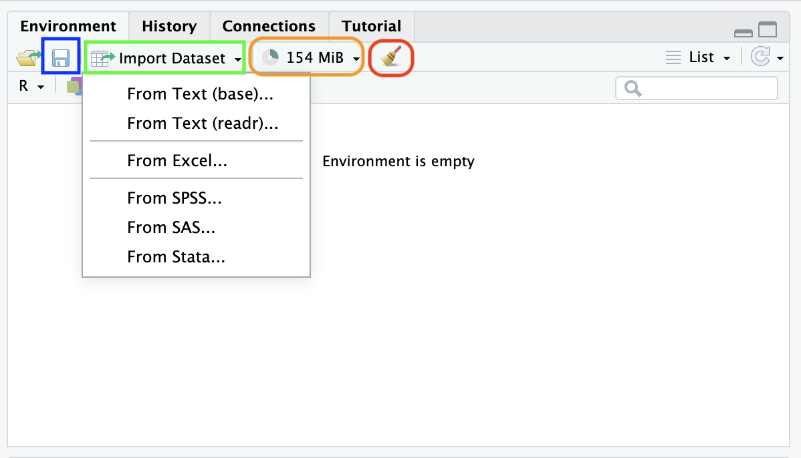
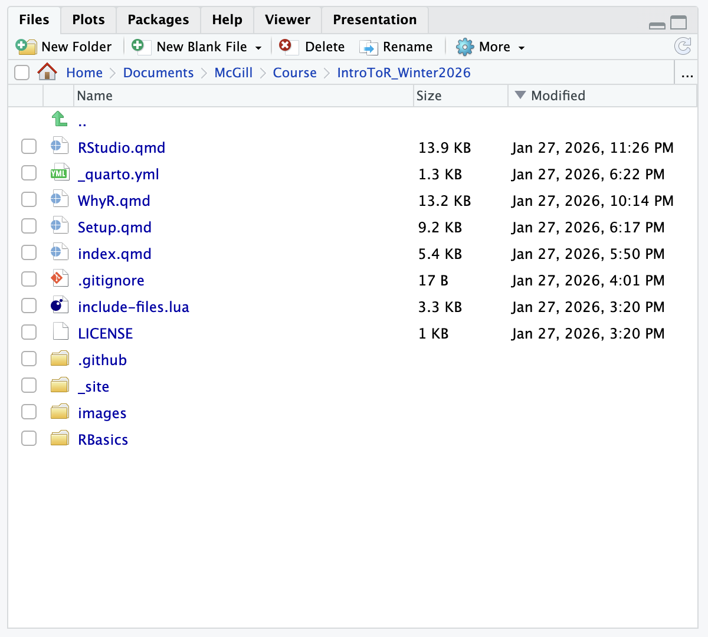
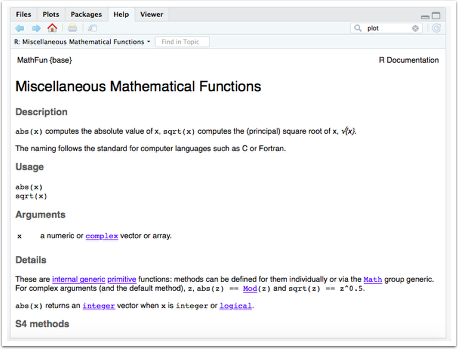

?mean # This opens the help page for the mean function
?sd # This opens the help page for standard deviationGet Acquainted with R and RStudio
Materials adapted from Adrien Osakwe, Larisa M. Soto, Xiaoqi Xie, TC Technology Knowledge Base, and R for Non-Programmers.
Learning Objectives
By the end of this page, you will understand:
- The distinction between R and RStudio (the “Engine” vs. the “Dashboard”).
1. R vs. RStudio: The Engine and the Dashboard
It is common to get these confused, but they are separate entities:
R (The Engine): The programming language that does the actual math. It was developed at the University of Auckland.
It is the powerful machine under the hood. It does all the heavy lifting, makes the car move, and handles the energy. But on its own, an engine is just a block of metal on the floor—you can’t sit in it or steer it easily.

RStudio (The Dashboard): An Integrated Development Environment (IDE). It is the software interface (developed by Posit) that makes writing R code much easier.
It’s the steering wheel, the seats, the GPS, and the speedometer. It’s the beautiful interface that lets you interact with the engine so you can actually drive where you want to go.

Note
Key Takeaway: Each program must be downloaded separately. You need to install both programs on your computer, but you will only ever “open” RStudio to do your work.
2. File Types: Scripts vs. Notebooks
In R, there are several ways to save your work. Choosing the right file type depends on whether you are writing code for a “computer” to run or a “human” to read.
Demo of R Scripts (.R)

Demo of Notebooks (.Rmd, .qmd, .ipynb)

2.1 R Scripts (.R)
Think of an R Script like a plain text file for code.
- Best for: Automation, data cleaning pipelines, and long-term “heavy lifting.”
- Pros: Very fast and lightweight. It is the “gold standard” for portability because it doesn’t require any special software other than R itself to run.
- Cons: Not great for storytelling; you can add comments (using
#), but you can’t include formatted text, headers, or images easily.
2.2 Notebooks (.Rmd, .qmd, .ipynb)
Notebooks follow the “Literate Programming” philosophy, where your code, its output (plots/tables), and your narrative text live together in one document.
- R Markdown (
.Rmd): The classic notebook for R. It has been the industry standard for years for creating PDFs and Word reports. - Quarto (
.qmd): The modern “successor” to R Markdown. It is more powerful and supports multiple languages (R, Python, Julia). This entire website was built using Quarto! - Jupyter Notebook (
.ipynb): Most common in the Python community, but can be used for R. Great for interactive data exploration but harder to use for writing a full thesis or book.
2.3 Comparison at a Glance
| File Type | Extension | Primary Use Case | Best Analogy |
|---|---|---|---|
| R Script | .R |
Pure code. Building tools and automating data cleaning. | A Recipe Card: Just the instructions. |
| Notebook | .qmd / .Rmd |
Writing reports, theses, or sharing results with a PI. | A Lab Notebook: The instructions + the results + your thoughts. |
2.4 Which one should I use?
- If you are writing a script that will run on a server overnight to process data: Use an R Script (
.R). - If you are analyzing your results and want to show your PI a visualization along with your interpretation: Use Quarto (
.qmd) or R Markdown (.Rmd).
3. How to interact with RStudio
Note
Welcome to your new workspace!
Is this your first time opening RStudio? The interface can feel overwhelming at first with its four different panes. Don’t worry—each one has a specific purpose designed to keep your research organized.
3.1 Overview
As shown in the figure below, the RStudio interface is divided into four primary panes. By default, they are arranged and named as follows:
Source Editor (Top-Left): Where you write and save your code.
Console (Bottom-Left): Where R executes your commands and shows immediate results.
Environment & History (Top-Right): Where your active data and past commands are stored.
Files, Plots, & Help (Bottom-Right): Your utility pane for navigating files, viewing graphs, and reading documentation.
TipWhat to do if a pane is missing
If your screen doesn’t look like the default layout, or if one of the panes has disappeared:
Go to the top menu and select View > Panes > Show All Panes.
You can further customize the layout and appearance under this same menu to suit your personal preferences.
TipThe “Disappearing” Source Pane
A common question from beginners is: “Why do I only see three windows?” If the Source Editor (the top-left window) is missing, it is usually because you haven’t opened a file yet.
To make it appear, you simply need to create a new script:
Via Menu: Select File > New File > R Script.
Via Keyboard Shortcut:
PC:
Ctrl + Shift + NMac:
Cmd + Shift + N
3.2 The Source Editor (Top-Left)
This is your primary workspace. Think of it as a specialized “Text Editor” for your research files.

3.2.1 Function Overview
You use this pane to write, edit, and save your scripts. Unlike the Console, everything you type here can be saved for future use.
3.2.2 Compatibility
RStudio can open almost any text-based file, including:
Data Scripts: R (
.R), Python (.py), or SQL.Notebooks: Quarto (
.qmd) and R Markdown (.Rmd).Documents: Plain text (
.txt), LaTeX (.tex), and BibTeX (.bib).
3.2.3 Data Viewer
You can also use this pane to inspect datasets in a “read-only” spreadsheet format (similar to Excel).
3.2.4 Executing Code
To run code from the Source Editor, you don’t just hit “Enter.” Instead, you use a specific keyboard shortcut to “send” the code from your script down to the Console:
Mac:
Cmd + Return(orEnter)Windows/Linux:
Ctrl + EnterNote: If you hit Enter by itself in the Source Editor, it will simply create a new line—just like in a Word document. It will not run your code.
NoteWays to Run Your Code
Run a Single Line: Place your cursor anywhere on the line you want to execute and use the shortcut.
Run a Section: Highlight a block of code with your mouse and then use the shortcut to run the entire selection at once.
The “Run” Button: You can also highlight your code and click the Run button in the top-right corner of the Source Pane. However, most professional R users prefer the keyboard shortcuts as they are much faster and more efficient!
3.2.5 Limitation
You cannot open Microsoft Office documents (.docx, .xlsx) or image files directly here—those must be imported using code.
3.3 The Console (Bottom-Left)
The Console is the “Engine Room.” This is where R actually executes your commands and displays the results.

Executing Code: You can type code directly into the Console and hit
Enter/Returnto see the result immediately.The Drawback: You cannot easily edit a command once it has been run. While you can use the Up Arrow key to retrieve your previous lines, these commands are not saved to your file.
Best Practice: Always write your code in a Script (Source Pane) first, then “send” it to the Console to run. This ensures your work is reproducible.
It is worth emphasizing again: Code typed directly into the Console is not saved. If you want to keep your work, always write your code in the Source Editor and “send” it to the Console to run.
How to rescue “lost” code: If you accidentally ran a long line of code in the Console and realized you forgot to save it to your script, don’t worry! You can find it in the History tab (Top-Right pane).
The History tab shows every command you have executed in order.
It does not show the results or outputs (like plots or tables), only the text of the commands.
You can select a line in the History tab and click “To Source” to send it back to your permanent script.
The Broom Icon: Use the broom icon (top-right of the pane) or the shortcut Ctrl + L to clear the text if the window becomes cluttered. This does not delete your data; it just cleans your screen.
- Note: This only clears the “text” on the screen; it does not delete your data or variables.
Checking Your R Version: The top of the Console displays your current R version (e.g.,
R 4.4.1). If a package fails to install, check here first to see if you need to update R.- Note that updating RStudio (the software) does not automatically update R (the language engine).
Finding Your Working Directory: Right next to your R version, you will see a file path starting with
~/. This is your Working Directory—the specific folder on your computer where R is currently “looking” for files.Understanding how R finds files is essential to avoiding the common
"File not found"error:Type Description Example Absolute Path The full “GPS address” from your C: drive or User folder. C:/Users/Martina/Project/data/raw_counts.csv Relative Path A “shorthand” address starting from your current folder.
In that case, your Working Directory must be set to:
C:/Users/Martina/Project/data/raw_counts.csv
Note
Best Practice: We recommend putting your relative data and your R script in the same folder (or a sub-folder) and using Relative Paths. This makes your project “portable”—if you send the whole folder to a colleague, the code will still work on their computer!
3.4 The Environment & History (Top-Right)

Environment: This tab shows you every “object” (datasets, variables, results) currently stored in R’s memory. If a variable isn’t listed here, R doesn’t know it exists!
- The “Golden Rule”: If a variable or dataset isn’t listed here, R does not know it exists! If you get an error saying
Object not found, check this tab first to see if you successfully created or imported it.
- The “Golden Rule”: If a variable or dataset isn’t listed here, R does not know it exists! If you get an error saying
History: This tracks every single line of code you have run in the current session. If you forgot to save a line of code to your script, you can find it here.
Key Features & Icons

Save/Load Workspace (Disk Icons): These allow you to save your entire Environment as an
.RDatafile. This is a huge time-saver for large projects; instead of re-running hours of code to recreate your variables, you can simply “Load” the.RDatafile and pick up exactly where you left off.Import Dataset Button: This is a “user-friendly” wizard that helps you import Excel, CSV, or SPSS files without typing out the code yourself. It’s a great “shortcut” for beginners—RStudio will even show you the code it generated so you can learn for next time.
Memory Usage (Pie Chart): This shows how much of your computer’s RAM is being used by R. If this number is extremely high, your computer may slow down or “lag.” This is common when working with massive genomic datasets or the UK Biobank.
The Broom Icon (Clear Environment): Clicking the broom will delete everything in your current Environment. Use this with caution! It is useful for a “fresh start,” but it cannot be undone.
3.5 Files, Plots, & Help (Bottom-Right)

This is your “Utility” pane:
Files: A basic file explorer to navigate your computer.
Plots: Where your visualizations (like GTT curves) will appear once you run your code.
Help: The most useful tab for beginners!
The Search Bar: You can type the name of any function (e.g.,
ggplot) or package (e.g.,dplyr) directly into the search bar at the top of the Help pane.The Console Shortcut: A faster way used by most R users is to type a question mark
?followed by the function name in the Console and hit Enter:What to look for: R documentation can be dense, but you should always scroll to the very bottom to find the Examples section. You can copy and paste these examples directly into your console to see how the function works in action.
4. [HANDS-ON ACTIVITY] Use Help in RStudio
Note
R offers some good resources to help you learn about its functions. For example, if you put a question mark before a function name, on the lower right quadrant of RStudio some help will pop up.
- Type ?sqrt in your script.
?sqrt
- Then, help will pop up on the bottom right hand quadrant of RStudio.

Note
These give documentation about how to use the function, what arguments it takes, and some example code. Example code might be a helpful page to start with.
- Type ??read_excel.
??read_excel
Note
You can also precede a function name with two question marks ?? to search all of your installed packages for it.
This is useful if you know there’s some sort of R function but you don’t remember what package it’s in. So if you get some code with the function read-excel in it but you forgot to load the readxl package, you can search for it using this double question mark and it’ll tell you which one’s to load.